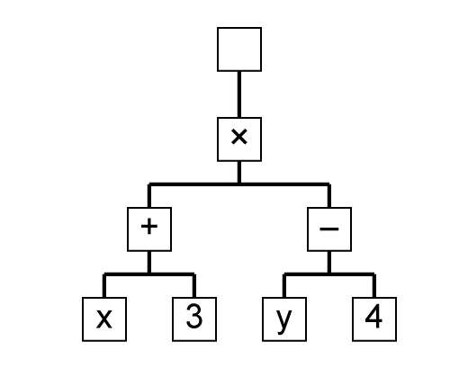
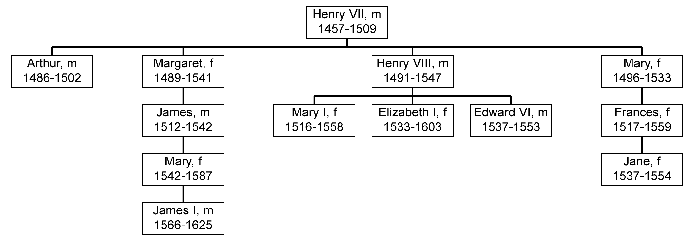
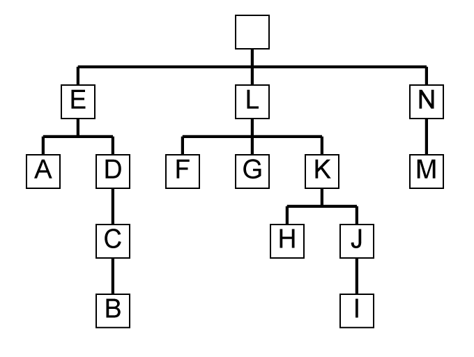

Rationale for Ada 2012
8.4 Multiway tree containers
Three new containers are added for multiway trees;
two correspond to the existing unbounded definite and unbounded indefinite
forms for existing structures such as Lists and Maps in Ada 2005. There
is also a bounded form corresponding to the newly introduced bounded
containers for the existing structures discussed above. As expected their
names are
A.C.Multiway_Trees
A.C.Indefinite_Multiway_Trees
A.C.Bounded_Multiway_Trees
These containers have all the operations required
to operate on a tree structure where each node can have multiple child
nodes to any depth. Thus there are operations on subtrees, the ability
to find siblings, to insert and remove children and so on. It will be
noted that many of the operations on trees are similar to corresponding
operations on lists.
We will look in detail at the unbounded definite
form by giving its specification interspersed with some explanation.
It starts with the usual generic parameters.
with Ada.Iterator_Interfaces;
generic
type Element_Type is private;
with function "=" (Left, Right: Element_Type)
return Boolean is <>;
package Ada.Containers.Multiway_Trees is
pragma Preelaborate(Multiway_Trees);
pragma Remote_Types(Multiway_Trees);
type Tree is tagged private
with Constant_Indexing => Constant_Reference,
Variable_Indexing => Reference,
Default_Iterator => Iterate,
Iterator_Element => Element_Type;
pragma Preelaborable_Initialization(Tree);
type Cursor is private;
pragma Preelaborable_Initialization(Cursor);
Empty_Tree: constant Tree;
No_Element: constant Cursor;
function Has_Element(Position: Cursor) return Boolean;
package Tree_Iterator_Interfaces is new
Ada.Iterator_Interfaces(Cursor, Has_Element);
This is much as expected and follows the same pattern
as the start of the list container in the previous section.
function Equal_Subtree
(Left_Position: Cursor;
Right_Position: Cursor) return Boolean;
function "=" (Left, Right: Tree) return Boolean;
function Is_Empty(Container: Tree) return Boolean;
function Node_Count(Container: Tree) return Count_Type;
function Subtree_Node_Count(Position: Cursor) return Count_Type;
function Depth(Position: Cursor) return Count_Type;
function Is_Root(Position: Cursor) return Boolean;
function Is_Leaf(Position: Cursor) return Boolean;
function Root(Container: Tree) return Cursor;
procedure Clear(Container: in out Tree);
A tree consists of a set of nodes linked together
in a hierarchical manner. Nodes are identified as usual by the value
of a cursor. Nodes can have one or more child nodes; the children are
ordered so that there is a first child and a last child. Nodes with the
same parent are siblings. One node is the root of the tree. If a node
has no children then it is a leaf node.
All nodes other than the root node have an associated
element whose type is Element_Type. The whole
purpose of the tree is of course to give access to these element values
in a structured manner.
The function "="
compares two trees and returns true if and only if they have the same
structure of nodes and corresponding nodes have the same values as determined
by the generic parameter "=" for
comparing elements. Similarly, the function Equal_Subtree
compares two subtrees.
The function Node_Count
gives the number of nodes in a tree. All trees have at least one node,
the root node. The function Is_Empty returns
true only if the tree consists of just this root node. Note that A_Tree
= Empty_Tree, Node_Count(A_Tree) = 1
and Is_Empty(A_Tree) always have the same
value. The function Subtree_Node_Count returns
the number of nodes in the subtree identified by the cursor. If the cursor
value is No_Element then the result is zero.
The functions Is_Root
and Is_Leaf indicate whether a node is the
root or a leaf respectively. If a tree is empty and so consists of just
a root node then that node is both the root and a leaf so both functions
return true.
The function Depth returns
1 if the node is the root, and otherwise indicates the number of ancestor
nodes. Thus a node which is an immediate child of the root has depth
equal to 2. The function Root returns the
cursor designating the root of a tree. The procedure Clear
removes all elements from the tree so that it consists just of a root
node.
function Element(Position: Cursor) return Element_Type;
procedure Replace_Element
(Container: in out Tree;
Position: in Cursor;
New_Item: in Element_Type);
procedure Query_Element
(Position: in Cursor;
Process : not null access procedure Element: in Element_Type));
procedure Update_Element
(Container: in out Tree;
Position: in Cursor;
Process: not null access procedure (Element: in out Element_Type));
These subprograms have the expected behaviour similar
to other containers.
type Constant Reference_Type
(Element: not null access constant Element_Type) is private
with Implicit_Dereference => Element;
type Reference_Type
(Element: not null access Element_Type) is private
with Implicit_Dereference => Element;
function Constant_Reference
(Container: aliased in Tree;
Position: in Cursor) return Constant_Reference_Type;
function Reference
(Container: aliased in out Tree;
Position: in Cursor) return Reference_Type;
These types and functions are similar to those for
the other containers and were explained in Section
6.3
on iteration and also in the previous section (Section
8.3).
procedure Assign(Target: in out Tree; Source: in Tree);
function Copy(Source: Tree) return Tree;
procedure Move(Target: in out Tree; Source: in out Tree);
The subprograms
Assign
and
Copy behave as expected and were explained
in Section
8.2 on Bounded and unbounded
containers. The procedure
Move moves all the
nodes from the source to the target after first clearing the target;
it does not make copies of the elements so after the operation the source
only has a root node.
procedure Delete_Leaf(Container: in out Tree; Position: in out Cursor);
procedure Delete_Subtree(Container: in out Tree; Position: in out Cursor);
procedure Swap(Container: in out Tree; I, J: in Cursor);
The procedures Delete_Leaf
and Delete_Subtree check that the cursor value
designates a node of the container and raise Program_Error
if it does not. Program_Error is also raised
if Position designates the root node and so
cannot be removed. In the case of Delete_Leaf,
if the node has any children then Constraint_Error
is raised. The appropriate nodes are then deleted and Position
is set to No_Element.
The procedure Swap interchanges
the values in the two elements denoted by the two cursors. The elements
must be in the given container (and must not denote the root) otherwise
Program_Error is raised.
function Find(Container: Tree; Item: Element_Type) return Cursor;
function Find_In_Subtree(Item: Element_Type; Position: Cursor) return Cursor;
function Ancestor_Find(Item: Element_Type; Position: Cursor) return Cursor;
function Contains(Container: Tree; Item: Element_Type) return Boolean;
These search for an element in the container with
the given value Item. The function Contains
returns false if the item is not found; the other functions return No_Element
if the item is not found. The function Find
searches the whole tree starting at the root node, Find_In_Subtree
searches the subtree rooted at the node given by Position
including the node itself; these searches are in depth-first order. The
function Ancestor_Find searches upwards through
the ancestors of the node given by Position
including the node itself.
Depth-first order is explained at the end of the
section.
procedure Iterate
(Container: in Tree;
Process: not null access procedure (Position: in Cursor));
procedure Iterate_Subtree
(Position: in Cursor;
Process: not null access procedure (Position: in Cursor));
These apply the procedure designated by the parameter
Process to each element of the whole tree
or the subtree. This includes the node at the subtree but not at the
root; iteration is in depth-first order.
function Iterate(Container: in Tree)
return Tree_Iterator_Interfaces.Forward_Iterator'Class;
function Iterate_Subtree(Position: in Cursor)
return Tree_Iterator_Interfaces.Forward_Iterator'Class;
The first of these
is called if we write
for C in The_Tree.Iterate loop
... -- do something via cursor C
end loop;
and iterates over the
whole tree in the usual depth-first order. In order to iterate over a
subtree we write
for C in The_Tree.Iterate_Subtree(S) loop
... -- do something via cursor C
end loop;
and this iterates over the subtree rooted at the
cursor position given by S.
If we use the other
new form of loop using of thus
for E of The_Tree loop
... -- do something to element E
end loop;
then this also calls Iterate
since the aspect Default_Iterator of the type
Tree (see above) is Iterate.
However, we cannot iterate over a subtree using this mechanism.
function Child_Count(Parent: Cursor) return Count_Type;
function Child_Depth(Parent, Child: Cursor) return Count_Type;
The function Child_Count
returns the number of child nodes of the node denoted by Parent.
This count covers immediate children only and not grandchildren.
The function Child_Depth
indicates how many ancestors there are from Child
to Parent. If Child
is an immediate child of Parent then the result
is 1; if it is a grandchild then 2 and so on.
procedure Insert_Child
(Container: in out Tree;
Parent: in Cursor;
Before: in Cursor;
New_Item: in Element_Type;
Count: in Count_Type := 1);
procedure Insert_Child
(Container: in out Tree;
Parent: in Cursor;
Before: in Cursor;
New_Item: in Element_Type;
Position: out Cursor;
Count: in Count_Type := 1);
procedure Insert_Child
(Container: in out Tree;
Parent: in Cursor;
Before: in Cursor;
Position: out Cursor;
Count: in Count_Type := 1);
These three procedures enable one or more new child
nodes to be inserted. The parent node is given by Parent.
If Parent already has children then the new
nodes are inserted before the child node identified by Before;
if Before is No_Element
then the new nodes are inserted after all existing children. The second
procedure is similar to the first but also returns a cursor to the first
of the added nodes. The third is like the second but the new elements
take their default values. Note the default value of one for the number
of new nodes.
procedure Prepend_Child
(Container: in out Tree;
Parent: in Cursor;
New_Item: in Element_Type;
Count: in Count_Type := 1);
procedure Append_Child
(Container: in out Tree;
Parent: in Cursor;
New_Item: in Element_Type;
Count: in Count_Type:= 1);
These insert the new children before or after any
existing children.
procedure Delete_Children(Container: in out Tree; Parent: in Cursor);
This procedure simply deletes all the children, grandchildren,
and so on of the node designated by Parent.
procedure Copy_Subtree
(Target: in out Tree;
Parent: in Cursor;
Before: in Cursor;
Source: in Cursor);
This copies the complete subtree rooted at Source
into the tree denoted by Tree as a subtree
of Parent at the place denoted by Before
using the same rules as Insert_Child. Note
that this makes a complete copy and creates new nodes with values equal
to the corresponding existing nodes. Note also that Source
might be within Tree but might not. There
are the usual various checks.
procedure Splice_Subtree
(Target: in out Tree;
Parent: in Cursor;
Before: in Cursor;
Source: in out Tree;
Position: in out Cursor);
procedure Splice_Subtree
(Container: in out Tree;
Parent: in Cursor;
Before: in Cursor;
Position: in Cursor);
procedure Splice_Children
(Target: in out Tree;
Target_Parent: in Cursor;
Before: in Cursor;
Source: in out Tree;
Source_Parent: in Cursor);
procedure Splice_Children
(Container: in out Tree;
Target_Parent: in Cursor;
Before: in Cursor;
Source_Parent: in Cursor);
These are similar to the procedures Splice
applying to lists. They enable nodes to be moved without copying. The
destination is indicated by Parent or Target_Parent
together with Before as usual indicating where
the moved nodes are to be placed with respect to existing children of
Parent or Target_Parent.
The first Splice_Subtree
moves the subtree rooted at Position in the
tree Source to be a child of Parent
in the tree Target. Note that Position
is updated to be the appropriate element of Target.
We can use this procedure to move a subtree within a tree but an attempt
to create circularities raises Program_Error.
The second Slice_Subtree
is similar but only moves a subtree within a container. Again, circularities
cannot be created.
The procedures Splice_Children
are similar but move all the children and their descendants of Source_Parent
to be children of Target_Parent.
function Parent(Position: Cursor) return Cursor;
function First_Child(Parent: Cursor) return Cursor;
function First_Child_Element(Parent: Cursor) return Element_Type;
function Last_Child(Parent: Cursor) return Cursor;
function Last_Child_Element(Parent: Cursor) return Element_Type;
function Next_Sibling(Position: Cursor) return Cursor;
function Previous_Sibling(Position: Cursor) return Cursor;
procedure Next_Sibling(Position: in out Cursor);
procedure Previous_Sibling(Position: in out Cursor);
Hopefully, the purpose of these is self-evident.
procedure Iterate_Children
(Parent: in Cursor;
Process: not null access procedure (Position: in Cursor));
procedure Reverse_Iterate_Children
(Parent : in Cursor;
Process: not null access procedure (Position: in Cursor));
These apply the procedure designated by the parameter
Process to each child of the node given by
Parent. The procedure Iterate_Children
starts with the first child and ends with the last child whereas Reverse_Iterate_Children
starts with the last child and ends with the first child. Note that these
do not iterate over grandchildren.
function Iterate_Children
(Container: in Tree;
Parent: in Cursor) return Tree_Iterator_Interfaces.Reversible_Iterator'Class;
This is called if we
write
for C in Parent.Iterate_Children loop
... -- do something via cursor C
end loop;
and iterates over all
the children from Parent.First_Child to Parent.Last_Child.
Note that we could also insert reverse thus
for C in reverse Parent.Iterate_Children loop
... -- do something via cursor C
end loop;
in which case the iteration goes in reverse from
Parent.Last_Child to Parent.First_Child.
The observant reader will note that this function returns Reversible_Iterator'Class
and so can go in either direction whereas the functions Iterate
and Iterate_Subtree described earlier use
Forward_Iterator'Class and cannot be reversed.
private
... -- not specified by the language
end Ada.Containers.Multiway_Trees;
The above descriptions have not described all the
situations in which something can go wrong and so raise Constraint_Error
or Program_Error. Generally, the former is
raised if a source or target is No_Element;
the latter is raised if a cursor does not belong to the appropriate tree.
In particular, as mentioned above, an attempt to create an illegal tree
such as one with circularities using Splice_Subtree
raises Program_Error. Remember also that every
tree has a root node but the root node has no element value; attempts
to remove the root node or read its value or assign a value similarly
raise Program_Error.
The containers for indefinite and bounded trees are
much as expected.
In the case of the
indefinite tree container the generic formal type is
type Element_Type(<>) is private;
The other significant difference is that the procedure
Insert_Child without the parameter New_Item
is omitted; this is because indefinite types do not have a default value.
In the case of the
bounded tree container the changes are similar to those for the other
containers. One change is that the package has pragma Pure;
the other changes concern the capacity. The type Tree
is
type Tree(Capacity: Count_Type) is tagged private;
and the function Copy
is
function Copy(Source: Tree; Capacity: Count_Type := 0) return Tree;
And of course the exception Capacity_Error
is raised in various circumstances.
Applications of trees are usually fairly complex.
The tree structure for depicting the analysis of a program for a whole
language such as even Ada 83 has an enormous variety of nodes corresponding
to the various syntactic structures. And trees depicting human relationships
are complex because of multiple marriages, divorces, illegitimacy and
so on. So we content ourselves with a couple of small examples.
A tree representing a simple algebraic expression
involving just the binary operations of addition, subtraction, multiplication
and division applied to simple variables and real literals is straightforward.
Nodes are of three kinds, those representing operations have two children
giving the two operands, and those representing variables and literals
have no children and so are leaf nodes.
We can declare the
element type thus
type Operator is ('+', '–', '×', '/');
type Kind is (Op, Var, Lit);
type El(K: Kind) is
record
case K is
when Op =>
Fn: Operator;
when Var =>
V: Character;
when Lit =>
Val: Float;
end case;
end record;
Note that the variables are (as typically in mathematics)
represented by single letters. So the expression
(x + 3) × (y – 4)
is represented by nodes with elements such as
(Op, '×')
(Var, 'x')
(Lit, 3.0)
So now we can declare
a suitable tree thus
package Expression_Trees is
new Ada.Containers.Multiway_Trees(El);
use Expression_Trees;
My_Tree: Tree := Empty_Tree;
C: Cursor;
and then build it by
the following statements
C := Root(My_Tree);
Insert_Child
(Container => My_Tree,
Parent => C,
Before => No_Element,
New_Item => (Op, '×'),
Position => C);
This puts in the first real node as a child of the
root which is designated by the cursor C.
There are no existing children so Before is
No_Element. The New_Item
is as mentioned earlier. Finally, the cursor C
is changed to designate the position of the newly inserted node.
We can then insert
the two children of this node which represent the mathematical operations
+ and –.
Insert_Child(My_Tree, C, No_Element, (Op, '+'));
Insert_Child(My_Tree, C, No_Element, (Op, '–'));
These calls are to
a different overloading of Insert_Child and
have not changed the cursor. The second call also has Before
equal to No_Element and so the second child
goes after the first child. We now change the cursor to that of the first
newly inserted child and then insert its children which represent x
and 3. Thus
C := First_Child(C);
Insert_Child(My_Tree, C, No_Element, (Var, 'x'));
Insert_Child(My_Tree, C, No_Element, (Lit, 3.0));
And then we can complete
the tree by inserting the final two nodes thus
C := Next_Sibling(C);
Insert_Child(My_Tree, C, No_Element, (Var, 'y'));
Insert_Child(My_Tree, C, No_Element, (Lit, 4.0));
Of course a compiler will do all this recursively
and keep track of the cursor rather more neatly than we have in this
manual illustration.
The resulting tree should be as in Figure 1.

Figure 1 The expression
tree
We can assume that
the variables are held in an array which might be as follows
subtype Variable_Name is Character range 'a' .. 'z';
Variables: array (Variable_Name) of Float;
We can then evaluate
the tree by a recursive function such as
function Eval(C: Cursor) return Float is
E: El := Element(C);
L, R: Float;
begin
case E.K is
when Op =>
L := Eval(First_Child(C));
R := Eval(Last_Child(C));
case E.Fn is
when '+' => return (L+R);
when '–' => return (L–R);
when '×' => return (L*R);
when '/' => return (L/R);
end case;
when Var =>
return Variables(E.V);
when Lit =>
return E.Val;
end case;
end Eval;
Finally, we obtain
the value of the tree by
X := Eval(First_Child(Root(My_Tree)));
Remember that the node at the root has no element
so hence the call of First_Child.
An alternative approach would be to use tagged types
with a different type for each kind of node rather than the variant record.
This would be much more flexible and would have required the use of the
unbounded indefinite container Ada.Containers.Indefinite_Multiway_Trees.
As a more human example we can consider the family
tree of the Tudor Kings and Queens of England. We start with Henry VII,
who had four children, Arthur, Margaret, Henry VIII and Mary. See Figure
2.

Figure 2 The Tudor
tree
Arthur died young, Margaret married James IV of Scotland
and had James (who was thus James V of Scotland), Henry VIII had three
children, namely Edward VI, Mary I and Elizabeth I. And Mary had Frances.
Henry VII was succeeded by Henry VIII and he was succeeded by his three
children.
Remember the rules of primogeniture. The heir is
the eldest son if there are sons; if not then the heir is the eldest
daughter. If there are no offspring at all then we go back a generation
and try again. Hence Edward VI became king despite being younger than
Mary.
Since Edward, Mary and Elizabeth had no children
we go back to the descendants of the other children of Henry VII. Margaret,
her son James, and his daughter Mary Queen of Scots were all dead by
then, so the throne of England went to the son of Mary who became James
I of England and VI of Scotland and thus united the two thrones. So the
Tudor line died with Elizabeth (Good Queen Bess).
Incidentally, Frances, the daughter of Mary, the
fourth child of Henry VII, had a daughter, Lady Jane Grey; she was Queen
for 9 days but lost her head over a row with Mary I.
Representing this is
tricky, especially with people such as Henry VIII having so many wives.
But the essence could be represented by a tree with a simple element
type thus
type Person is
record
Name: String(1 .. 10);
Sex: Gender;
Birth: Date;
Death: Date;
end record;
With such a structure and the dates, starting from
Henry VII and using the rules of primogeniture, one should be able to
trace the monarchs (apart from poor Lady Jane Grey who would I am sure
much rather not have been involved).
The overall tree structure is shown in Figure 2.
With the obvious connections
we can define useful functions such as
function Are_Cousins(A, B: Cursor) return Boolean is
(Parent(A) /= Parent (B) and then
Parent(Parent(A)) = Parent(Parent(B)));
More of a challenge is to define a function Is_Successor
using the rules described above. The reader can contemplate these and
other family relationships and attempt to construct the Tudor tree.
Finally, an explanation
of depth-first order. The general principle is that child nodes are visited
in order before their parent. We can symbolically write this as
procedure Do_Node(N) is
begin
for CN in N.First_Child .. N.Last_Child loop
Do_Node(CN);
end loop;
if not N.Is_Root then
Do_Element(N);
end if;
end Do_Node;
and the whole thing is triggered by calling Do_Node(Root).
Remember that the root node has no element. The result is that the first
element to be processed is that of the leftmost leaf.
Thus in the tree illustrated below in Figure 3, the
elements are visited in order A, B, C, D, and so on. Note that the root
has no element and so is not visited.

Figure 3 A tree showing
depth-first order
© 2011, 2012, 2013 John Barnes Informatics.
Sponsored in part by: